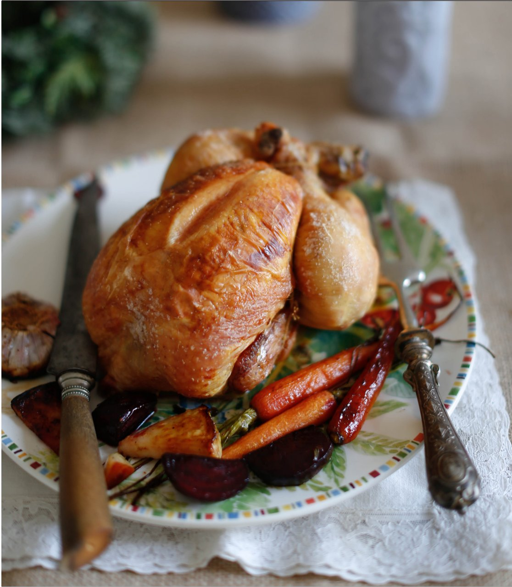

Четыре метода приготовления целой запечeнной курицы — от классического высокотемпературного до двухдневного рецепта Хестона Блюменталя. Ключи к успеху: термометр, засол, масло под кожей грудки и правильный отдых перед подачей.
Засол в растворе: 8%-й раствор соли (240 г на 3 л воды), курицу держать сутки-двое. Сухой засол: 3/4 ч. л. морской соли среднего помола на 500 г курицы, посолить под кожей и внутри.
Масло под кожей грудки: осторожно отделить кожу грудки пальцами и распределить под ней 100–150 г размягчeнного сливочного масла. По желанию ароматизировать тимьяном, лимонной цедрой.
Температура готовности курицы: 68–70°С (внутренняя). Выше 82°С — мясо пересушено. Термометр — обязателен. Проверять в самом толстом месте, подальше от кости.